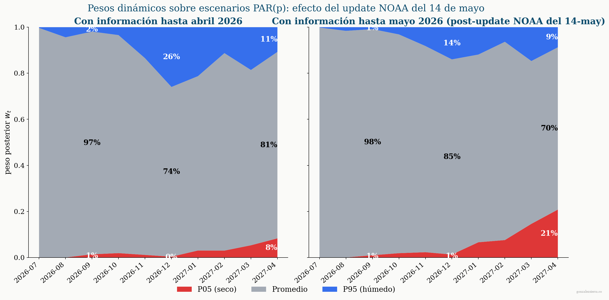
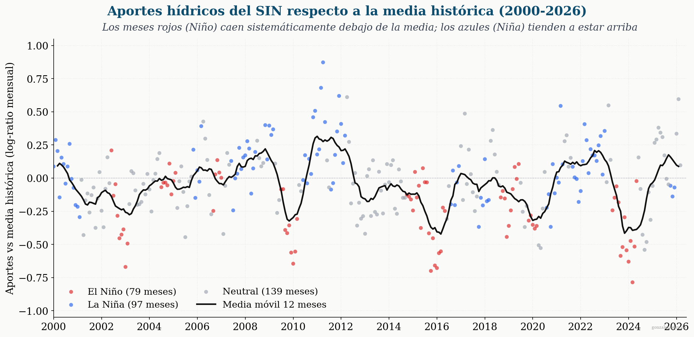
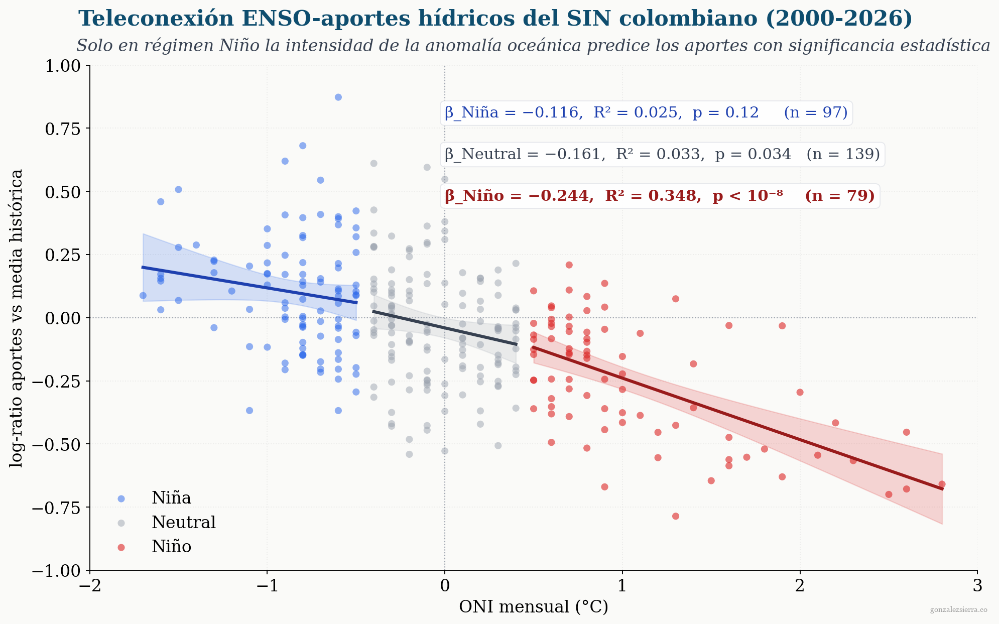
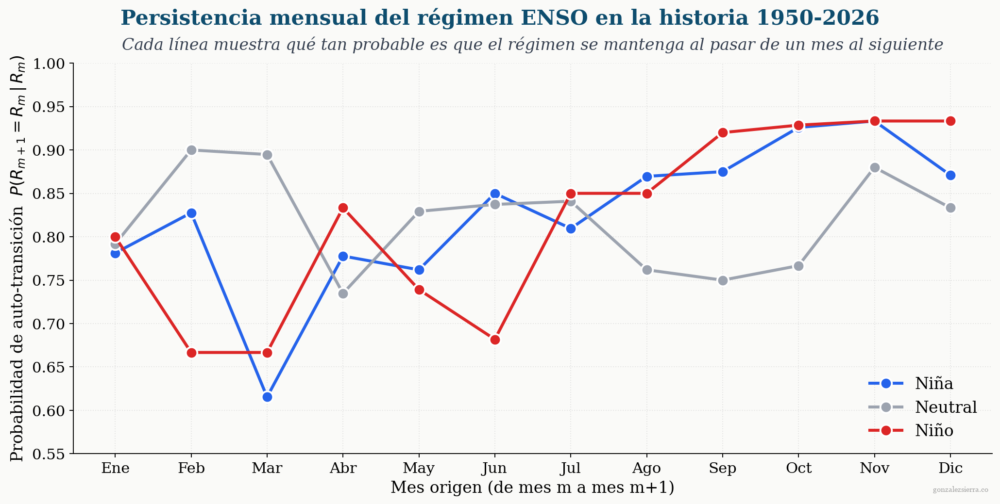
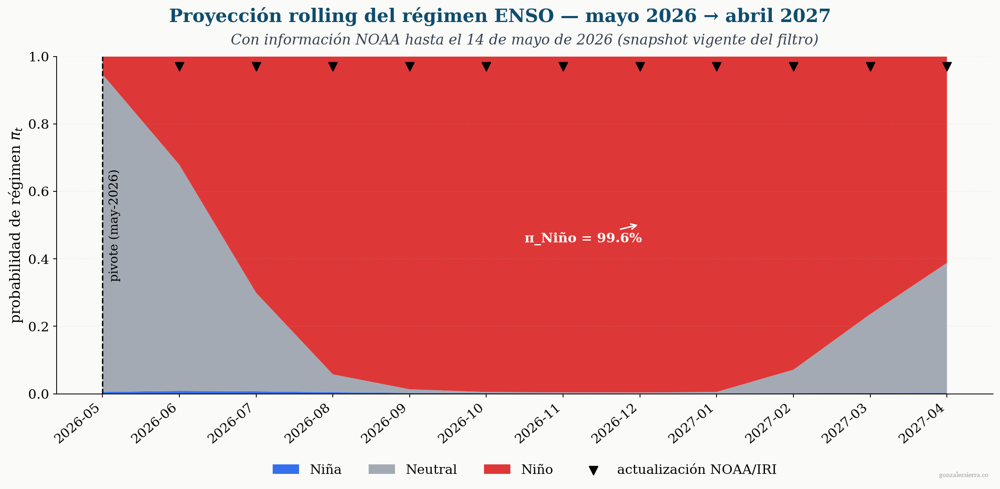
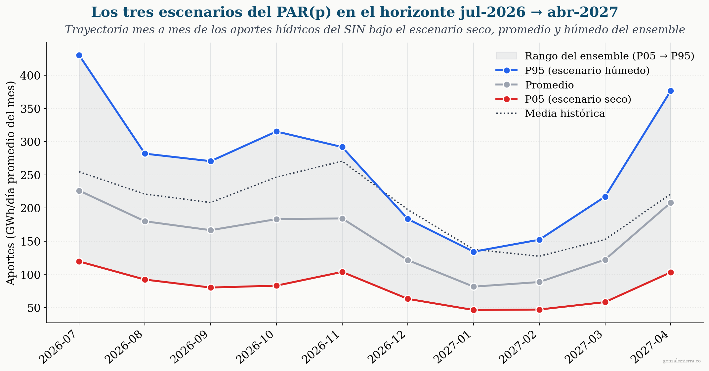
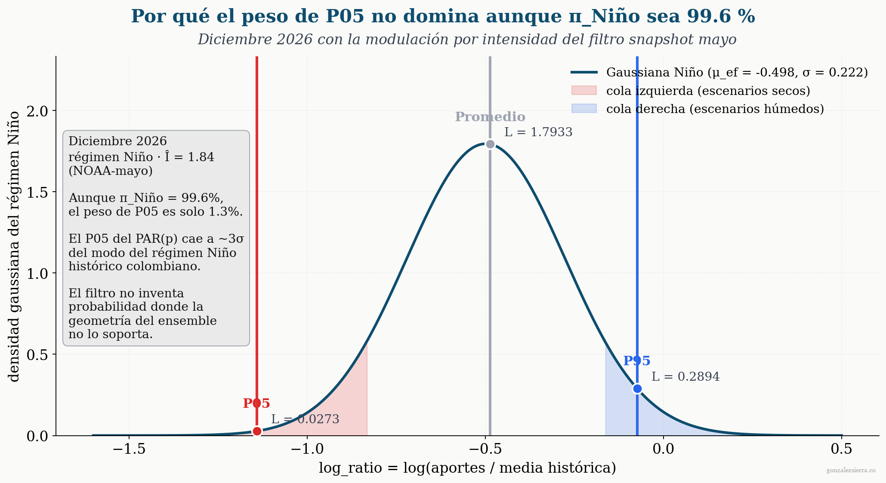
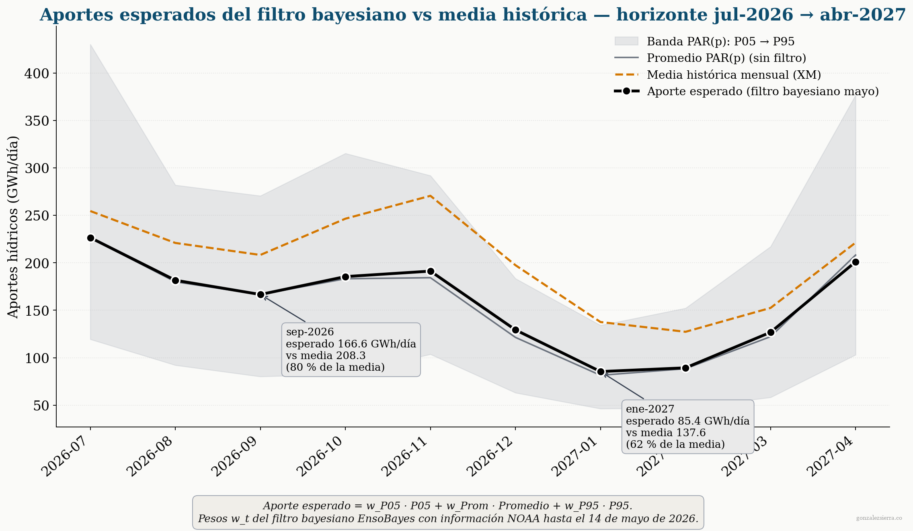
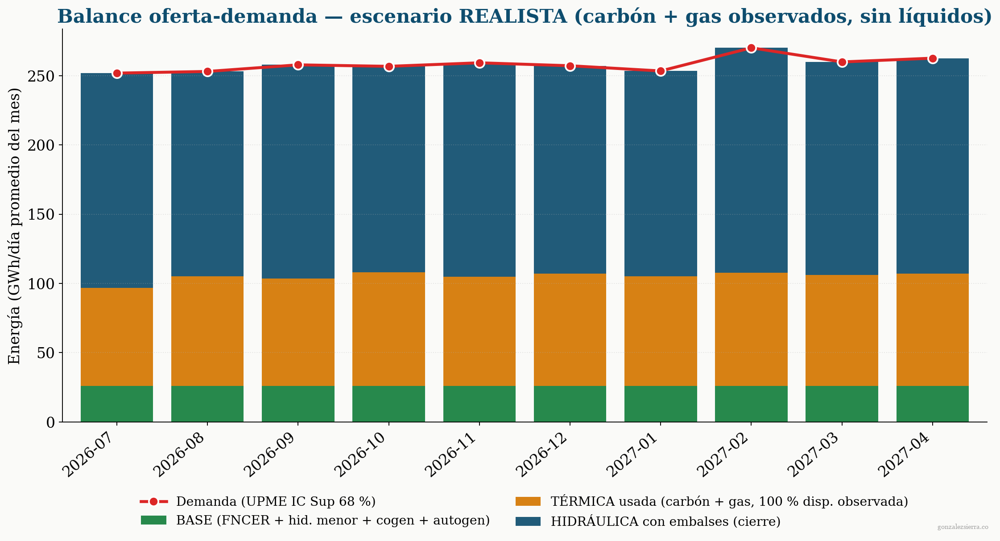

Apertura
En septiembre de 2024, tras el déficit de aportes que dejó el Fenómeno de El Niño 2023-24, la CREG activó por primera vez en los diez años de vigencia del mecanismo el Estatuto para Situaciones de Riesgo de Desabastecimiento contemplado en la Resolución CREG 026 de 2014 (modificada por la Resolución CREG 209 de 2020). La activación, formalizada el 29 de septiembre por la Circular CREG 072 de 2024 y levantada el 22 de noviembre por la Resolución CREG 101-063 de 2024, es la herramienta de última instancia con la que el operador interviene cuando la confiabilidad del sistema no se sostiene con los precios ordinarios del mercado: durante su vigencia, el precio de oferta de las plantas hidráulicas se reemplaza por uno anclado al de la térmica más costosa. Apenas dieciocho meses después, el pronóstico actual de NOAA apunta a un nuevo evento de El Niño cuya masa de probabilidad se concentra en las categorías más intensas, y los embalses entran al horizonte 2026-27 sin haber recuperado del todo el colchón perdido durante el ciclo anterior.
Sobre ese telón de fondo, el 14 de mayo de 2026 NOAA publicó su pronóstico mensual ENSO y, en 35 días, la probabilidad de El Niño para junio (trimestre MJJ) pasó del 61 % al 82 %. Pero el dato más informativo está enterrado más profundo: la masa de probabilidad de El Niño se redistribuyó hacia las categorías de mayor intensidad. En la ventana de pico — el trimestre NDJ 2026, centrado en diciembre — la categoría very strong pasó del 16 % al 38 % de la masa de Niño en un solo mes. Lo que cambió, en otras palabras, no fue solo «hay más Niño»; fue «hay más Niño fuerte».
| Trimestre (mes central) | Prob. El Niño (abril) | Prob. El Niño (mayo) | Δ |
|---|---|---|---|
| MJJ 2026 (junio) | 61 % | 82 % | +21 pp |
| JAS 2026 (agosto) | 87 % | 96 % | +9 pp |
| NDJ 2026 (diciembre) | 92 % | 98 % | +6 pp |
| DJF 2026-27 (enero 2027) | (decay) | 96 % | — |
La pregunta que este estudio resuelve: ¿qué esperar de la hidrología del sistema interconectado entre julio de 2026 y abril de 2027, y cómo se traduce ese shock en términos de confiabilidad energética para el sector eléctrico colombiano? Para estimar el efecto de El Niño sobre la hidrología del parque hidráulico colombiano, este estudio toma como insumo la simulación indicativa de XM publicada en la semana 21 de 2026 (18–24 de mayo), que proporciona los tres escenarios representativos — \(P_{05}\), Promedio y \(P_{95}\) — del modelo PAR(p) del SDDP. Sobre esos tres escenarios se aplica una ponderación bayesiana que integra la información del pronóstico ENSO de NOAA, el IRI y los aportes hídricos observados del SIN. La distribución posterior resultante alimenta, en segundo lugar, la evaluación de si el sistema agregado tiene con qué cubrir la demanda bajo esos escenarios. La pregunta natural que sigue — si esa hidrología compromete la senda de referencia del Estatuto de Desabastecimiento — la abordo en un segundo estudio.

Llegamos a este pronóstico en un sistema que ya viene tensionado. El embalse agregado del SIN está en 67 % al cierre de mayo, los aportes hídricos acumulados del año van en 72.3 % de la media histórica, y la oferta térmica del país tiene varios eventos programados en la ventana que viene — entre ellos el mantenimiento de la planta de regasificación SPEC en el cambio de julio a agosto, que restringe el gas disponible para generación durante cinco días. Ese punto de partida — embalse en zona media, aportes por debajo de la media, térmica con margen escaso — es el que va a recibir la materialización del Niño durante el segundo semestre de 2026.
El método combina tres fuentes de información — los pronósticos probabilísticos de NOAA (probabilidades por categoría de intensidad), del IRI (pronósticos trimestrales tricategóricos) y los aportes hídricos observados del SIN — en un filtro bayesiano recursivo. El filtro mantiene una creencia sobre el régimen ENSO (Niña / Neutral / Niño) que se actualiza mes a mes con cada nueva publicación, y sobre esa creencia calcula la probabilidad de materialización de los tres cuantiles del PAR(p). El output es una distribución posterior \(w_t = (w_{P_{05}},\, w_{\text{Prom}},\, w_{P_{95}})\) con \(\sum_i w_t(i) = 1\) para cada mes \(t\) del horizonte julio 2026 → abril 2027.
Contexto
El SIN colombiano en una página
El Sistema Interconectado Nacional opera con una capacidad efectiva neta cercana a los 21.300 MW al cierre de mayo de 2026, según el catálogo PARATEC publicado por XM. La composición está concentrada en hidráulica: alrededor del 62 % del parque son plantas hidráulicas (≈ 13.211 MW), 29 % térmicas (≈ 6.213 MW), 9 % solares (≈ 1.884 MW) y una participación eólica marginal — Jepírachi ya no figura en operación y los proyectos de La Guajira no se han incorporado al SIN a la fecha de este estudio. De toda la hidráulica, lo que XM despacha centralmente —donde están los grandes embalses cabecera del sistema— suma del orden de 12.237 MW, repartido entre plantas como Guavio, San Carlos, Ituango, Chivor, Sogamoso, Porce III, Guatapé, Betania, Porce II y El Quimbo, entre otras.
Estos embalses agregan una capacidad de almacenamiento del orden de 16.918 GWh — el verdadero seguro energético del sistema. Esa cifra define el espacio operativo del SIN: cuando los aportes hídricos son altos, los embalses llenan, la térmica opera marginalmente y los precios de bolsa permanecen bajos; cuando son bajos, la térmica corre como base y el nivel de los embalses se va consumiendo. El balance del sector eléctrico colombiano es, en buena medida, un balance hídrico — y por eso entender qué le va a pasar al recurso hidrológico durante el horizonte 2026-27 es la primera pregunta que hay que resolver.
La teleconexión ENSO-Colombia
La razón física por la que El Niño afecta tan directamente a Colombia está en el desplazamiento meridional de la Zona de Convergencia Intertropical (ZCIT) y en el debilitamiento de los vientos alisios que normalmente cargan de humedad las masas de aire del Pacífico. Cuando el Pacífico ecuatorial central se calienta, la ZCIT se ancla más al sur del ecuador climatológico y los alisios pierden fuerza; el resultado es una atmósfera más estable sobre las cuencas andinas, menor precipitación orográfica sobre la cordillera occidental y la cordillera central, y menores aportes a los embalses cabecera del sistema —Chuza, Guavio, Peñol-Guatapé, San Carlos, Salvajina—. La intensidad del efecto depende de la magnitud de la anomalía oceánica medida por el ONI, no solo de su signo.
Ese patrón se ve directamente en la historia hidrológica del SIN. Si tomamos los aportes mensuales del sistema entre 2000 y 2026, los comparamos contra el promedio histórico de cada mes y separamos cada observación por el régimen ENSO en que ocurrió, lo que aparece es una señal nítida: durante los meses de El Niño los aportes caen sistemáticamente por debajo del promedio, durante los de La Niña tienden a estar por encima, y durante los meses neutros oscilan en torno al promedio sin un sesgo claro.

Esta señal cualitativa se puede cuantificar ajustando una recta por régimen, que describe cuánto cambian los aportes por cada grado adicional de anomalía oceánica. El resultado, mostrado en la siguiente figura, es donde aparece el hallazgo metodológicamente más importante del análisis.

Hay una distinción operativa importante entre los tres regímenes que conviene precisar. La Niña y los meses neutros sí afectan los aportes —los puntos azules tienden a estar arriba de la media, los grises oscilan en torno a ella—, pero su intensidad no agrega información predictiva: una Niña moderada y una Niña fuerte producen aportes similares en promedio. En cambio, durante El Niño la intensidad sí importa de manera material: un Niño fuerte produce un déficit hidrológico claramente mayor que un Niño moderado. Esta asimetría tiene una consecuencia directa para el filtro bayesiano que describiremos en la Metodología: el filtro estima el régimen actual usando información de los tres estados (Niña, Neutral, Niño), pero solo modula la magnitud esperada del impacto hidrológico cuando el régimen es Niño. Para Niña y Neutral, el filtro asume el efecto típico del régimen sin ajustar por intensidad.
El punto de partida — mayo de 2026
El sistema entra al horizonte 2026-27 con tres marcadores que conviene tener presentes. Embalse agregado al 67 % de su capacidad útil al cierre de mayo: una cifra que está por encima del umbral operativo crítico pero claramente debajo del nivel típico de pre-invierno hidrológico (julio-agosto suelen ver el embalse cercano al 80 % antes de que arranque la temporada seca). Aportes acumulados del año al 72.3 % de la media histórica: una sequía moderada heredada del ciclo anterior, no extrema, pero suficiente para que el colchón hídrico no se haya reconstruido del todo después del evento 2023-24. Y una demanda en torno a los 260 GWh/día en días hábiles, alineada con la línea base de la proyección UPME pero con riesgo al alza por el efecto del Niño sobre el consumo de climatización en la región Caribe y en los valles del Cauca y del Magdalena.
A esa instantánea se suma un hecho operacional concreto en el horizonte inmediato: el mantenimiento programado de la planta de regasificación SPEC en Cartagena, del 30 de julio al 3 de agosto, que restringe el gas disponible para generación durante cinco días. Es uno de varios eventos programados que el sistema absorbe rutinariamente, pero merece registrarse desde ya porque pasa justo en el momento en que la térmica empieza a ser solicitada con más intensidad. Es el punto de partida desde el cual la materialización del Niño 2026-27 va a operar.
Del recurso a la decisión: el rol del PAR(p)
El sector eléctrico colombiano cuenta con un instrumento estandarizado para acotar el comportamiento hidrológico futuro: el modelo PAR(p) que XM ejecuta dentro del SDDP como parte de la simulación indicativa del despacho. Ese modelo genera, semana a semana, una banda de escenarios representativos del rango probable de aportes mes a mes en el horizonte que sigue. Tomado solo, el PAR(p) no decide cuál escenario es más probable; presenta un abanico. La pregunta operativa, entonces, no es qué va a pasar con la hidrología sino qué peso probabilístico asignar a cada uno de esos escenarios dada toda la información disponible sobre el estado actual del Pacífico ecuatorial — la publicación más reciente de NOAA, el pronóstico tricategórico del IRI, la serie de aportes observados del propio SIN. Esa es exactamente la pregunta que la siguiente sección, la Metodología, responde.
Metodología
La pregunta del filtro
La pregunta operativa que la Metodología responde se puede plantear en una frase: dado todo lo que sabemos hasta hoy —pronósticos oceánicos, pronósticos atmosféricos y aportes hídricos observados—, ¿qué tan probable es que cada uno de los tres regímenes ENSO (Niña, Neutral, Niño) sea el que efectivamente esté ocurriendo este mes? Y, una vez respondida esa pregunta, ¿cómo se traduce esa creencia sobre el régimen en pesos sobre los tres escenarios del PAR(p) que XM publica como insumo del despacho? El instrumento es un filtro bayesiano recursivo: una receta clásica para combinar, de manera disciplinada, lo que ya creíamos con lo que acabamos de observar.
El filtro no parte cada mes de cero. La creencia sobre el régimen de junio se construye sobre la creencia de mayo, propagada hacia adelante por una matriz de transición de Markov que captura el comportamiento estacional histórico del sistema ENSO. Esa matriz se estima con 76 años de la serie NOAA, mes calendario a mes calendario, y refleja un hecho conocido por la literatura climatológica: el ENSO tiene memoria, y esa memoria depende del mes del año. La probabilidad de que un mes en régimen Niño se mantenga en régimen Niño al pasar al mes siguiente no es la misma en abril que en noviembre.

La regla de Bayes, dicha en palabras
La operación fundamental del filtro, por mes, es una aplicación directa de la regla de Bayes. Para cada régimen \(r\) ∈ {Niña, Neutral, Niño} y cada mes \(t\) del horizonte:
\[ \pi_t(r) \;\;\propto\;\; P(\text{observación}_t \mid r) \;\times\; \pi_{t \mid t-1}(r) \]Lo que está a la izquierda, \(\pi_t(r)\), es lo que queremos saber: dado lo que observamos, qué tan probable es cada régimen. Lo que está a la derecha tiene dos pedazos. El primero, \(P(\text{observación}_t \mid r)\), es la verosimilitud: cuán compatible es la observación con cada régimen. Se calibra empíricamente con la historia: si en los últimos 76 años los meses de Niño registraron ONI promedio cercano a +1.0 °C, entonces observar hoy un ONI de +0.5 °C es más compatible con Niño que con Niña, pero no tanto como un +1.5. El segundo pedazo, \(\pi_{t \mid t-1}(r)\), es la creencia previa: cuán probable era cada régimen antes de mirar la observación, viene del filtro del mes anterior propagada por la matriz de transición estacional que ya describimos.
El filtro repite esta operación mes a mes, integrando nueva información en cada paso. El posterior del mes \(t\) se convierte en el prior del mes \(t+1\). No hay ningún truco bayesiano sofisticado: lo que hay es disciplina —no se ignora información previa, no se sobrereacciona a un solo dato—.
Las cuatro fuentes de información
El filtro consume cuatro fuentes, cada una entregando información distinta sobre el estado del Pacífico ecuatorial y del recurso hídrico colombiano:
- ONI (NOAA). El índice oceánico observado. Es la medida más directa del estado del Pacífico ecuatorial — anomalía de temperatura superficial del mar en la región Niño 3.4. El filtro lo usa como verosimilitud gaussiana calibrada por régimen sobre toda la historia 1950-2026.
- Pronóstico CPC NOAA por intensidad. Publicación mensual del Climate Prediction Center que da probabilidades para los próximos nueve trimestres, desagregadas por categorías de intensidad —weak, moderate, strong, very strong— cuando el régimen pronosticado es El Niño. Esta es la fuente que captura el «shock del 14 de mayo» descrito en la apertura.
- Pronóstico IRI. Pronóstico tricategórico (Niña / Neutral / Niño) del International Research Institute for Climate and Society de Columbia University, basado en un ensemble multi-modelo. Aporta una segunda opinión sobre el horizonte trimestral, útil para no sobre-pesar la lectura puramente NOAA.
- Aportes hídricos observados del SIN. La única fuente local. Permite anclar el estado oceánico global a lo que efectivamente le pasa al sistema colombiano. Mes a mes, el filtro compara el aporte observado con lo que cada régimen produciría típicamente —según la calibración mensual histórica de los últimos 26 años—.
Las cuatro fuentes son aproximadamente independientes condicional al régimen verdadero, así que se combinan multiplicativamente. Cada una entra al filtro con un factor de confianza que regula cuánto pesa relativamente: ONI y aportes pesan al máximo por ser medidas directas; los pronósticos NOAA e IRI entran con temperatura menor que uno, porque son pronósticos y no observaciones.
Modulación por intensidad y proyección al horizonte
Cuando el filtro determina que el régimen es Niño con alta probabilidad, la pregunta operativa cambia. Ya no es «qué tan probable es Niño», sino «qué tan intenso será». Aquí entra la innovación metodológica del filtro respecto a un filtro bayesiano clásico de tres regímenes. La modulación por intensidad usa la cuantificación de la Sección 2: por cada grado adicional de ONI esperado durante el evento, el aporte hidrológico esperado baja aproximadamente \(\beta_{\text{Niño}} = -0.244\) unidades del log-ratio (\(p < 10^{-8}\), \(R^2 = 0.348\) sobre 79 meses históricos). Esta modulación se aplica únicamente durante régimen Niño — la asimetría que documentamos en la Sección 2: durante Niña y Neutral, el filtro asume el efecto típico del régimen sin ajustar por intensidad, porque la intensidad no agrega información predictiva en esos dos estados.
La proyección rolling aplica la mecánica anterior hacia adelante, mes a mes, desde el pivote del filtro —mayo de 2026, el último mes con observaciones completas— hasta abril de 2027. Cada mes futuro recibe la información que le corresponde: la publicación más reciente NOAA del trimestre cuyo mes central coincide con ese mes, el pronóstico IRI tricategórico equivalente, y la propagación markoviana del posterior del mes anterior. Cuando NOAA publica probabilidades para los nueve trimestres futuros, el filtro las usa directamente; cuando se agotan los trimestres publicados, el filtro extiende el horizonte aplicando un factor de decaimiento trimestral que devuelve gradualmente masa probabilística al régimen Neutral.

De régimen a escenarios PAR(p): por qué el peso de P05 no domina
El modelo PAR(p) que XM ejecuta dentro del SDDP no produce una predicción única de aportes hídricos. Produce un conjunto de trayectorias estocásticas que reflejan la incertidumbre intrínseca del recurso hídrico futuro. De esas trayectorias, XM publica como referencia tres escenarios representativos: el \(P_{05}\) (el escenario seco extremo, donde solo el 5 % de las trayectorias son más secas), el Promedio (la trayectoria media del ensemble), y el \(P_{95}\) (el escenario húmedo extremo, donde solo el 5 % son más húmedas). Estos tres escenarios son los que efectivamente alimentan los procesos de planeación y simulación del despacho indicativo del Sistema Eléctrico Colombiano. La pregunta operativa es: dado lo que sabemos sobre el régimen ENSO esperado, ¿qué peso probabilístico le asignamos a cada uno mes a mes?

Hay un detalle en la figura anterior que merece destacarse: el Promedio del ensemble PAR(p) está sistemáticamente por debajo de la media histórica en todo el horizonte. Esto es llamativo, porque el PAR(p) es un modelo puramente estadístico sobre la serie histórica de aportes —no recibe el estado actual del Pacífico ecuatorial como insumo—. Lo que esto sugiere es que el modelo ya captura, a partir de las propiedades estadísticas recientes de los aportes, parte del déficit hidrológico esperado para el horizonte. El aporte que el filtro bayesiano agrega es complementario: integra explícitamente la información ENSO observada y proyectada, refinando los pesos sobre los tres escenarios para reflejar el régimen esperado mes a mes.
El último paso del filtro es traducir la creencia sobre el régimen ENSO a pesos sobre esos tres escenarios. Para cada mes del horizonte, el filtro evalúa cuán compatible es cada uno —\(P_{05}\), Promedio, \(P_{95}\)— con el régimen esperado.
La intuición es que en un mes con régimen Niño esperado, los aportes deberían parecerse más al \(P_{05}\) que al \(P_{95}\) — pero esa intuición es solo parcialmente correcta, y la sutileza importa.

Lo que esto significa en términos operativos: el filtro no infla artificialmente el peso del escenario más seco solo porque la probabilidad de Niño sea alta. Lo que hace es transferir masa probabilística del \(P_{95}\) (escenario húmedo) hacia el Promedio durante el pico del evento, y solo en la fase de relajación post-pico aparece una redistribución material hacia el \(P_{05}\). Esta honestidad geométrica es la diferencia entre un análisis cuantitativo creíble y una sobre-estimación del riesgo: nada en la metodología fuerza al modelo a contar como muy probable algo que la historia hidrológica colombiana no respalda como probable.
El aparato está calibrado con 76 años de datos NOAA, 26 años de aportes hídricos del SIN, y los 9 trimestres futuros que publican NOAA y el IRI. La replicación de los coeficientes centrales del filtro contra resultados publicados independientemente confirma que la implementación es correcta. Lo que viene en la Sección de Resultados es la aplicación concreta: cómo se mueven los pesos \(w_t\) entre los snapshots de abril y mayo, qué dice el balance energético agregado sobre el esfuerzo del sistema durante el horizonte, y cuáles son las contingencias operativas que el balance mensual no captura. El documento técnico completo del filtro está disponible bajo solicitud.
Resultados
El shock bayesiano del 14 de mayo
El filtro bayesiano no apareció el 14 de mayo. Para esa fecha ya estaba operando con la publicación NOAA del 9 de abril, y ese snapshot previo ya señalaba probabilidad creciente de El Niño hacia el segundo semestre de 2026. Lo que cambia con la publicación del 14 de mayo no es la dirección del pronóstico —que era la misma— sino su intensidad: la masa de probabilidad se desplaza hacia las categorías de Niño fuerte y muy fuerte, lo que en el lenguaje del filtro se traduce en una modulación más seca de los aportes esperados durante el evento. La consecuencia operativa es una redistribución material de los pesos \(w_t\) sobre los tres escenarios del PAR(p), tanto en el pico del evento como —y esto es lo menos intuitivo— en la fase de relajación post-pico.
El shock se ve mejor en los números. En diciembre de 2026 (pico del evento), el peso del escenario \(P_{95}\) baja del 26 % al 14 % entre los snapshots de abril y mayo, mientras el Promedio absorbe esa masa (del 74 % al 85 %). En abril de 2027 (fase de relajación), \(w_{P_{05}}\) sube del 8 % al 21 % y el Promedio cede masa (del 81 % al 70 %). El filtro está diciendo dos cosas distintas según el momento del horizonte: durante el pico, el Niño hace que el escenario \(P_{95}\) sea poco creíble; durante la relajación, el sistema queda atrapado con probabilidad significativa de aportes secos porque el filtro sostiene la creencia de Niño donde el snapshot plano de abril ya la había relajado.
Lo que estos pesos significan operativamente se ve mejor en la magnitud del recurso esperado. Combinando los tres escenarios con sus pesos \(w_t\) mes a mes se obtiene la trayectoria de aportes esperados del sistema: una línea única que el filtro proyecta como mejor estimador del recurso bajo toda la información disponible.

Esta línea negra es el insumo hidrológico del balance que viene a continuación. La pregunta operativa, una vez se traduce la creencia ENSO a una expectativa concreta sobre el recurso, es si el sistema agregado tiene con qué cubrir la demanda bajo esos aportes esperados. Para responderla pasamos del filtro al balance energético.
El balance energético del horizonte
El balance enfrenta tres bloques de oferta contra una proyección de demanda. La BASE agrega la generación menor del sistema —filos de agua bajo 20 MW, solar utility, distribuida, cogeneración y autogeneración térmica— ponderada por sus factores de planta calibrados para condición Niño. La TÉRMICA despachada centralmente entra como techo operativo a cubrir lo que la base no alcanza. La HIDRÁULICA con embalses cierra el balance: lo que no cubren ni la base ni la térmica sale de los embalses despachados centralmente, alimentados por los aportes esperados del filtro. La demanda viene del escenario superior 68 % de la proyección UPME, consistente con la referencia actual de ~260 GWh/día en días hábiles, ajustada al alza por efecto del Niño sobre la demanda de climatización en costa Caribe y los valles interiores.
El balance descansa en dos premisas operativas que conviene precisar. La primera: la térmica disponible se modela con la disponibilidad real observada por combustible —carbón y gas, excluyendo combustibles líquidos que son respaldo de emergencia, no operación normal—. La cifra realista del parque térmico es del orden de 3.300 MW equivalentes promedio del horizonte; eso es aproximadamente un 38 % menos que los 5.795 MW de capacidad efectiva nominal que reporta XM en PARATEC. Sustituir el nominal por el observado es lo que permite leer el balance como una representación creíble del esfuerzo operativo. La segunda premisa: los aportes hídricos al sistema de embalses son la línea negra de la figura anterior —el aporte esperado del filtro bayesiano—, no el escenario Promedio crudo del PAR(p).
Para acotar la incertidumbre operativa de la térmica se manejan tres escenarios, todos restringidos respecto a la disponibilidad reportada. Ninguno representa una operación "ideal" del parque térmico; los tres son distintos grados de limitación de la disponibilidad observada de carbón + gas:
- Térmica al 90 % de su disponibilidad observada — escenario de operación estresada pero relativamente conservadora.
- Térmica al 80 % — captura mantenimientos no planeados, restricciones puntuales de transporte de gas e indisponibilidades imprevistas adicionales.
- Térmica al 70 % — cota inferior plausible bajo restricciones combinadas durante el horizonte.

La lectura visual del balance contiene un hallazgo estructural que vale la pena hacer explícito. La oferta térmica del horizonte está fijada como supuesto del análisis: cada escenario asume que la térmica entrega el 90 %, 80 % o 70 % de su disponibilidad observada, y el balance distribuye la demanda restante entre BASE e HIDRÁULICA con embalses. La consecuencia es directa: cualquier indisponibilidad térmica que aparezca durante el horizonte por encima del supuesto del escenario —mantenimientos no programados, restricciones de transporte de gas, fallas— no se compensa con más térmica disponible, sino que sale directamente del embalse. La hidráulica con embalses absorbe toda la variabilidad adicional que el sistema enfrenta. Eso define el carácter del horizonte 2026-27: el embalse no es solo el seguro estructural del recurso hidrológico; es también el amortiguador de cualquier desvío térmico respecto al supuesto operativo.
La pregunta natural que sigue es si los embalses alcanzan para absorber todo lo que la térmica no puede cubrir bajo cada uno de los tres niveles térmicos analizados. Esa pregunta se contesta siguiendo la trayectoria de reservas agregadas mes a mes, contrastada contra un punto de referencia operativo: la meta de embalse del 30 de noviembre de 2026 que se desprende de la senda de referencia para el invierno hidrológico 2026, calculada según la Resolución CREG 026/2014. Esa senda fija el nivel objetivo del embalse al cierre del invierno; para el 30-nov-2026 el valor publicado se sitúa en 82.55 % de la capacidad.
![Trayectorias mensuales del nivel de embalse agregado del SIN entre julio de 2026 y abril de 2027 bajo tres escenarios de disponibilidad térmica (90 por ciento azul, 80 por ciento naranja, 70 por ciento rojo). Línea horizontal punteada en 82.55 por ciento marca la meta de embalse al 30-nov-2026 conforme a la Resolución CREG 026 de 2014, con un rombo destacado en el punto exacto de la meta. Zona inferior sombreada en rojo muy claro indica la zona crítica bajo el 30 por ciento; ninguna trayectoria la toca.](assets_nino2627/fig_reservas.png)
La lectura honesta del resultado tiene dos planos. El primero es la confirmación: el balance agregado no muestra escenario de racionamiento bajo ninguno de los tres niveles de disponibilidad térmica analizados; ninguna trayectoria toca la zona crítica de menos del 30 % durante el horizonte completo. El segundo plano es la distinción operativa nueva que aparece al contrastar contra la meta CREG. Con la térmica al 90 %, el embalse cierra el 30 de noviembre en 95.2 % —12.6 puntos porcentuales por encima de la meta—. Con la térmica al 80 %, cierra en 88.2 % —5.6 puntos por encima—. Con la térmica al 70 %, cierra en 81.1 % —1.4 puntos por debajo—. El escenario de térmica al 70 % es el único que no cumple la meta de la senda, y su mínimo del horizonte (31.5 % en marzo de 2027) queda apenas 1.5 puntos arriba de la zona de estrés. La diferencia entre cumplir o no cumplir la senda regulatoria se juega en 10 puntos porcentuales de disponibilidad térmica.
Esta sensibilidad al margen térmico se ilustra con un evento operativo concreto del horizonte inmediato: el mantenimiento programado de la planta de regasificación SPEC en Cartagena, del 30 de julio al 3 de agosto de 2026, que retira aproximadamente 29 GWh/día de gas natural del sistema durante cinco días. El balance mensual lo absorbe —julio pierde unos 5 GWh/día de techo térmico promedio—. A escala diaria, sin embargo, el sistema sí lo siente: durante los cinco días del mantenimiento pierde el 56 % del gas habitualmente disponible para generación. Es uno de varios eventos similares en el horizonte; lo que el balance hace evidente es que en un sistema con la térmica saturada todo el año, cualquier indisponibilidad —programada o no— sale directo del embalse.
Lo que el filtro bayesiano dice sobre los aportes esperados, lo que el balance dice sobre las trayectorias del embalse bajo distintos niveles de disponibilidad térmica, y la confrontación con la meta de cierre del invierno hidrológico convergen en una sola lectura: el sistema eléctrico colombiano puede atravesar el Súper Niño 2026-27 sin entrar en racionamiento agregado, pero el cumplimiento de la senda regulatoria depende críticamente de cómo opere el parque térmico durante el horizonte. Con la térmica al 80 % o más de su disponibilidad observada, el sistema cierra noviembre por encima de la meta. Con la térmica al 70 %, el sistema queda 1.4 puntos porcentuales por debajo. La diferencia entre cumplir o no cumplir la senda se juega en 10 puntos porcentuales de disponibilidad térmica. La pregunta natural que sigue —qué significa formalmente para el sistema cumplir o no esta senda, y bajo qué condiciones se activan las medidas regulatorias correspondientes— es la que aborda el segundo artículo de esta serie.
Conclusiones
Lo que el estudio dice
Tres hallazgos sustentan este análisis y conviene dejarlos explícitos al cierre.
El sistema atraviesa el horizonte sin racionamiento agregado. Los tres niveles de disponibilidad térmica analizados (90 %, 80 % y 70 %) producen trayectorias del embalse agregado que no tocan la zona crítica del 30 %, y ninguno presenta déficit no cubierto durante el horizonte jul-2026 → abr-2027. La conclusión se sostiene en los tres escenarios térmicos restringidos del balance, sin necesidad de invocar un escenario optimista.
El cumplimiento del nivel de embalse meta depende del nivel térmico. Con la térmica al 90 % el sistema cierra el invierno hidrológico al 95.2 %, holgadamente por encima de la meta del 82.55 %. Con la térmica al 80 % lo cumple con 5.6 puntos porcentuales de holgura. Con la térmica al 70 % queda 1.4 puntos por debajo. La diferencia entre cumplir o no la senda regulatoria se juega en 10 puntos porcentuales de disponibilidad térmica observada.
Una precisión importante sobre cómo leer este resultado: el balance asume que la térmica entrega su capacidad disponible de manera constante y anticipada a lo largo del horizonte, lo cual no necesariamente refleja la operación real del sistema durante un evento de El Niño. En la práctica, el despacho térmico depende de las condiciones del mercado, del nivel de los embalses, de restricciones puntuales de transporte de gas y de decisiones operativas del CND. Lo que el balance indica, entonces, no es que la térmica vaya a operar al 90 % durante todo el horizonte, sino que para alcanzar el nivel meta de embalse del 30 de noviembre de 2026, el parque térmico tendría que entregar en promedio el 90 % de su disponibilidad observada durante el horizonte. Es una lectura normativa, no descriptiva: traduce el objetivo de embalse a un requerimiento sobre la generación térmica promedio del periodo.
La hidráulica con embalses es el amortiguador estructural del horizonte. Cualquier indisponibilidad térmica que aparezca por encima del supuesto operativo del escenario —mantenimientos no programados, restricciones de transporte de gas, fallas— no se compensa con más térmica disponible, sino que sale directo del embalse. La disciplina con la que se opere ese amortiguador durante el segundo semestre de 2026 es lo más material a vigilar.
Qué vigilar en los próximos meses
El estudio se construyó con información cerrada al 14 de mayo de 2026. La siguiente lista resume los marcadores cuyo seguimiento permite refinar la lectura presentada acá y anticipar si el sistema se mueve hacia el escenario más optimista o el más restrictivo:
- Publicaciones mensuales de NOAA CPC sobre ENSO. La próxima publicación es a mediados de junio. Si el shock del 14 de mayo se sostiene o se intensifica, las trayectorias proyectadas en este estudio se confirman; si se relaja, el filtro redistribuye masa probabilística de vuelta hacia regímenes menos secos. La proyección rolling del filtro se actualiza con cada nueva publicación.
- Aportes hídricos observados vs aportes esperados del filtro. Mes a mes, comparar lo que el SIN efectivamente recibe contra la línea de aportes esperados del estudio. Una desviación sistemática —positiva o negativa— sería señal de que el filtro necesita recalibrarse o que la teleconexión está operando con una intensidad distinta a la histórica.
- Evolución del nivel de embalse agregado. Es el indicador más directo del estado del sistema. Si la trayectoria observada se acerca al escenario del 70 % más que al del 90 %, las restricciones térmicas reales son materialmente mayores que las asumidas en el escenario más conservador.
- Disponibilidad térmica real por combustible. Es la variable que define en cuál de los tres escenarios opera realmente el sistema. Las publicaciones de XM sobre disponibilidad efectiva de carbón y gas son la fuente directa para anclar la lectura del balance contra la operación observada.
- Eventos operacionales puntuales. Mantenimientos programados de plantas grandes, restricciones de transporte de gas, indisponibilidades imprevistas. Cada uno individualmente menor, pero juntos contribuyen al desvío térmico agregado del horizonte y por tanto al drenaje adicional del embalse.
El segundo artículo de esta serie abordará el marco regulatorio del Estatuto de Desabastecimiento —qué significa formalmente operar cerca o por debajo de la senda CREG, y cuáles son los indicadores y medidas que la regulación contempla para esas situaciones.